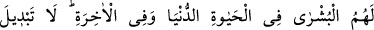
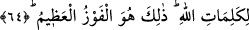

Allah’a varır.
Bayezid (k.s.) der ki: “Allah’ın velileri gelinler gibidir. Gelinleri de sadece
mahremleri görebilir. Mahrem olmayanlar ise göremez. Veliler O’nun katında üns
perdesiyle gizlenmişlerdir. Onları hiç kimse ne dünyada ne de âhirette görebilir.”
Sehl (k.s.) de der ki: “Allah’ın velilerini ancak onlara denk olanlar ya da Allah’ın
onlardan kendilerini faydalandırmak istediği kimseler tanıyabilir. Allah onları insanlar
tanıyacak kadar tanıtsaydı onlar bu insanların aleyhine bir delil olurdu. Onları
tanıdıktan sonra karşı gelenler küfre düşerler, onların emirlerini yerine getirmeyenler de
yoldan çıkardı.”
Şeyh Ebü’l-Abbas (k.s.) şöyle der: “Veliyi tanımak Allah’ı tanımaktan daha zordur.
Çünkü Allah Teâlâ, kemali ve cemali ile tanınır. Ama bir mahluk kendisi gibi yiyen,
kendisi gibi içen birisini nasıl tanıyabilir? Allah dostlarının zâhiri şeriat hükümleriyle
müzeyyen, bâtını ise fakr nurlarıyla meşguldür.”
Mesnevî’de şöyle denilmiştir:
Tarikat sâliklerinin âdeti şudur:
Onlar şeriatın hükümleri üzere giderler
Kâşifî de velileri tavsif ederken şöyle der:
Onlar atlarını ezel meydanından bu âleme sürdüler
Ebed çevgânıyla (ucu eğri cirit sopası) topu oynattılar
Cenâb-ı Kibriyâ’nın hareminde îtikafa girip, kapandılar
Gönülden kibir ve riyâ sûretlerini yıkadılar.
Hak yolun sâliki veliler herkese yol göstermezler.
İlâhî sırları açığa vurmazlar; bu sırları herkese söylemezler
Sa‘dî de şöyle der:
Hakk’ın muhabbetinde esir olanlar kurtulmak istemezler
Hakk’ın avı olanlar onun kemendinden kurtulmak dilemezler
Mahbûbum yanımdayken ben mahbûb ararım
Irmak kenarında dudak susuzluktan kurumuş!
64. Dünya hayatında da ahirette de onlara müjde vardır. Allah’ın sözlerinde aslâ